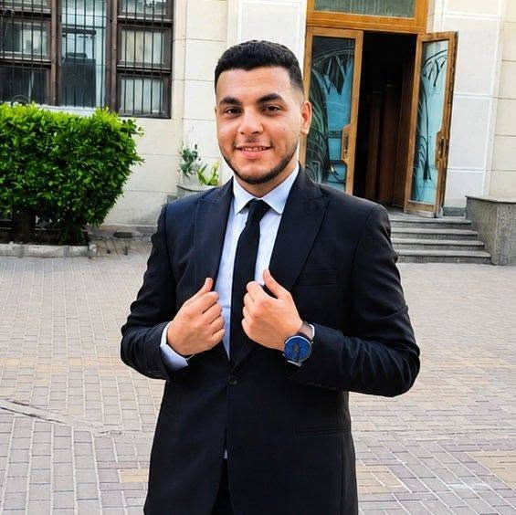

Professional interests
Caterpillar heavy equipment, diesel engine systems, hydraulics, static equipment, maintenance, and performance testing.

Mechanical Engineer · Main Shop Service Engineer
I’m a Mechanical Engineer at Mantrac Egypt, working in the Alexandria Main Shop on Caterpillar machine maintenance and rebuilds. My background also includes static equipment maintenance at Petromaint, with interests in troubleshooting, diesel engines, hydraulic systems, and practical engineering problem-solving.
I graduated with a Bachelor’s degree in Mechanical Engineering from Alexandria University. I currently work as a Main Shop Service Engineer at Mantrac Egypt, supporting maintenance and rebuild work on Caterpillar machines. Previously, I worked at Petromaint on static equipment and hydraulic tools maintenance. I value safe work practices, accurate troubleshooting, teamwork, and continuous technical development.
Caterpillar heavy equipment, diesel engine systems, hydraulics, static equipment, maintenance, and performance testing.
Follow service information and safety procedures, understand system operation, and verify machine performance after maintenance.
Carry out and support maintenance, troubleshooting, component replacement, and machine rebuild activities on Caterpillar equipment in the Alexandria Main Shop. Apply knowledge of hydraulic systems and hydraulic schematics to understand circuit operation, trace components and lines, support fault diagnosis, and verify system performance after repair. Work with service information and follow workshop safety procedures throughout disassembly, reassembly, and testing.
Static equipment and hydraulic tools maintenance.
Faculty of Engineering, Alexandria University.
Project focused on thermal energy storage using phase change material (PCM).
Arabic — Native
English — Intermediate
Exempt
A selection of technical training and professional development completed through Caterpillar/Mantrac and other training providers.
Introduction to Caterpillar products, service support, and the technical knowledge needed to work effectively with Cat equipment.
Fundamentals of diesel engine components and operation, including air intake and exhaust, fuel, lubrication, cooling, HEUI/MEUI/common-rail fuel systems, and emissions.
Hydraulic fluids and circuits, pumps, valves, actuators, hydraulic schematics, and control systems, including LSPC, PPPC, and NFC concepts.
Fundamentals of electrical power systems, including AC/DC concepts, generators, three-phase power, electrical loads, and basic power calculations.
Core service-task procedures and practical maintenance fundamentals for carrying out service work safely and consistently.
Safety, health, and environmental principles relevant to service operations, including safe work practices and risk awareness.
Caterpillar technical training listed in the original CV.
Training through Alexandria Engineers Syndicate, covering workplace health and safety fundamentals.
Training through Alexandria Engineers Syndicate on firefighting-system fundamentals.
Training through Alexandria Engineers Syndicate on medical-gas and plumbing-system fundamentals.
Online course covering 3D CAD modeling fundamentals.
Online courses covering document creation and presentation development.
Additional internships listed in the CV: Caterpillar Mantrac, Alexandria (August 2022); West Delta Electricity Production / Alexandria Electricity Distribution Co. — Abou Qir (August 2021); Water Mansheya Station 1, Alexandria (September 2021).
For professional connections and opportunities in mechanical engineering, maintenance, and heavy-equipment service.
Alexandria, Egypt · ahmedabdelatif787@gmail.com · LinkedIn Profile